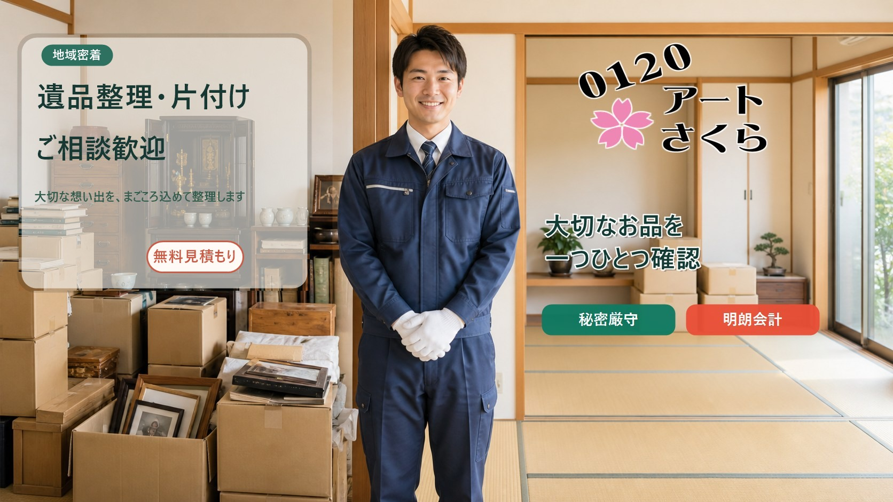
横浜市都筑区 対応 ｜ 神奈川本社
横浜市都筑区の遺品整理・実家片付けならアートさくら
回収から仕分け、リユース、リサイクル、資源化まで自社で一貫対応。池辺町の神奈川本社から都筑区内へ伺います。
都筑区でよくいただく相談
こんなお悩み、ご相談いただいています
センター北・センター南周辺のマンションで、荷物の量が多く何から手をつけるか決められない。
仲町台・北山田周辺の実家で、二階や納戸に何年も手つかずの荷物が残っている。
池辺町・折本町周辺の戸建てで、部屋数が多く家財の量も多い。
施設への入居が決まり、期限までに生前整理を進めたい。
都筑ふれあいの丘周辺の空き家を売却する前に、家財を整理しておきたい。
形見として残したいものと、手放してよいものの区別がつけられない。
対応内容
サービス一覧
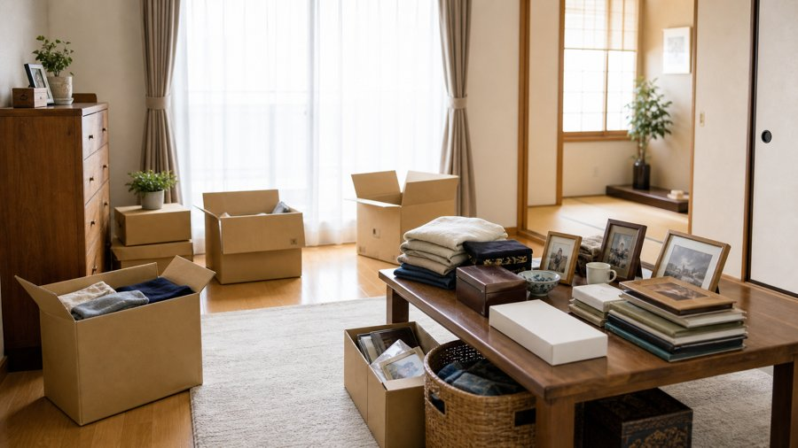
遺品整理
ご家族が亡くなられた後のお部屋を、確認しながら仕分けます。形見や供養が必要なものも分けて進めます。
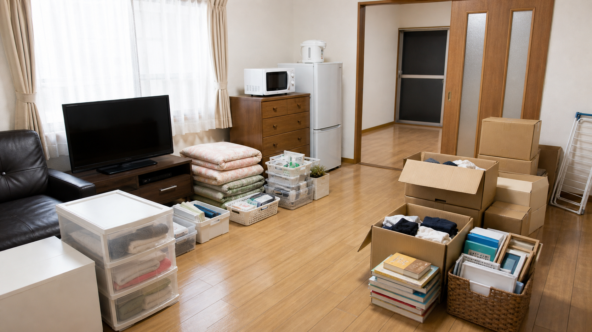
実家片付け
何十年分の家財が残る実家を、部屋ごと・時期ごとに分けながら進められます。
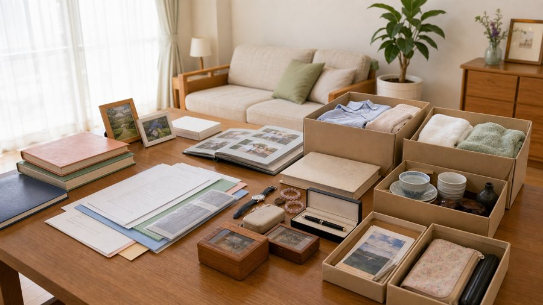
生前整理
ご本人が元気なうちに、これから使うものと手放すものを一緒に整理します。
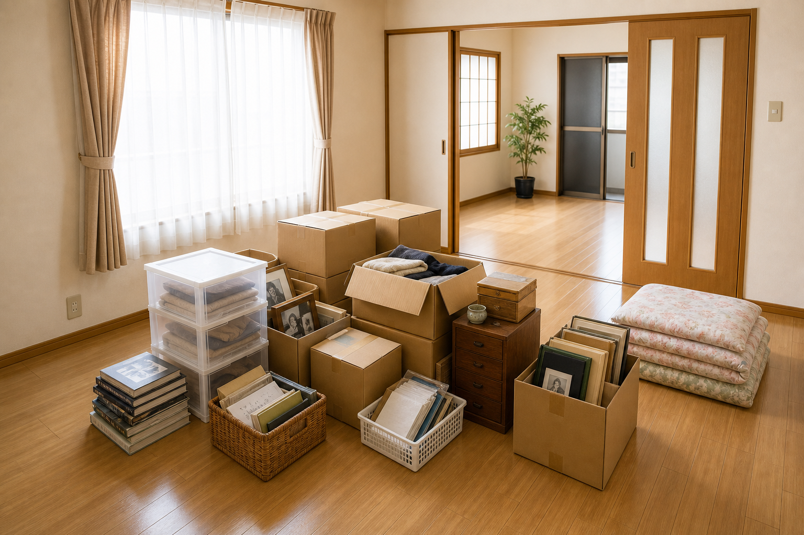
空き家整理
相続や転居で空き家になった住宅の家財整理に対応します。

家財整理
大量の家財がある戸建てや、複数部屋の整理にも対応します。
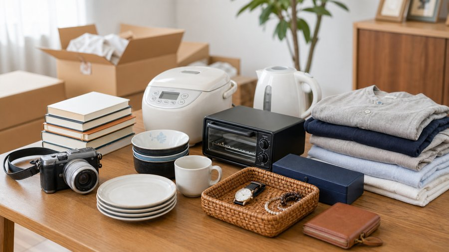
買取・リユース相談
状態のよい家具・家電・貴金属などは、買取のご相談もあわせて承ります。
アートさくらの体制
回収から仕分け・リサイクル・資源化まで、自社の作業場で一貫対応

回収から資源化まで自社一貫
仕分け後のリユース品の選別や資源化の手配まで、外部への委託を挟まず自社で行っています。
約500坪の自社作業場
横浜市内に約500坪の作業場を持っており、搬出した家財をここに運び入れて時間をかけて仕分けます。
丁寧な分別
回収した品物を、再利用できるもの、資源として活かせるものに丁寧に分別しています。
現場負担を抑えやすい
現場ですべてを判断しきらず、自社作業場で仕分けできるため、現場の作業時間や依頼者の負担を抑えやすくなります。
買取・リユース相談
買取、リユース、リサイクル、資源化まで、まとめてご相談いただけます。
大量整理にも対応
大量の家財整理、戸建て、空き家、施設入居前後の片付けにも対応しやすい体制です。
整理したあとの家財について
リユース・リサイクル・資源化という選択肢
家財や遺品をただなくすのではなく、次に活かせる形へつなげます。衣類、家電、家具、金属類、紙類、雑貨などを種類ごとに分けます。
買取や再利用につながる品は、費用面に影響する場合があります。リユースや資源化によって、整理する量を減らせる場合があります。
作業事例
整理前・整理後の様子
1R・1Kの遺品整理
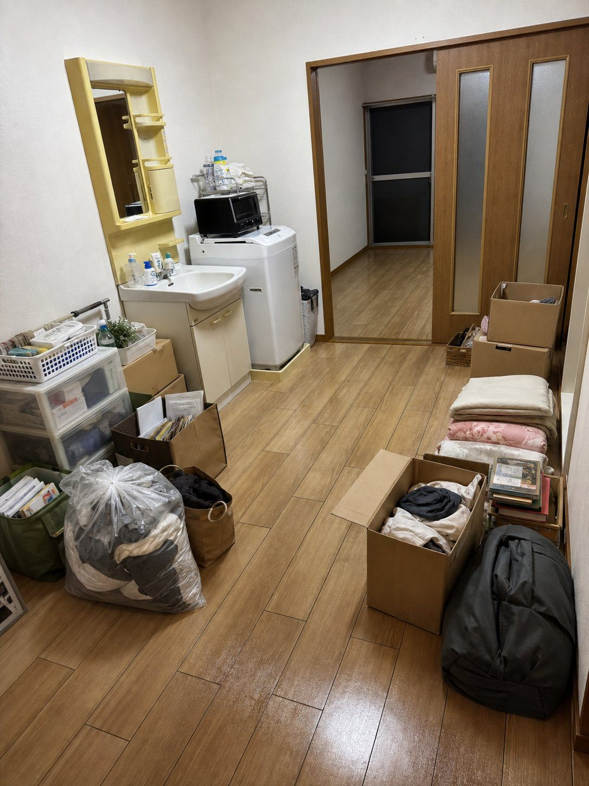
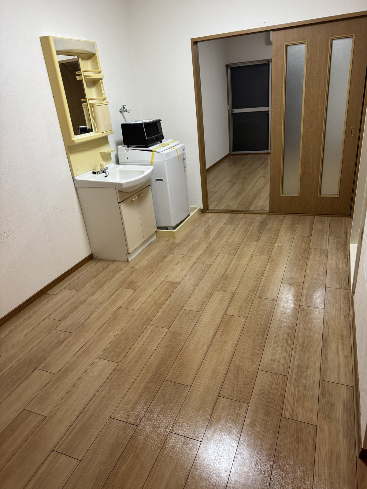
戸建ての家財整理
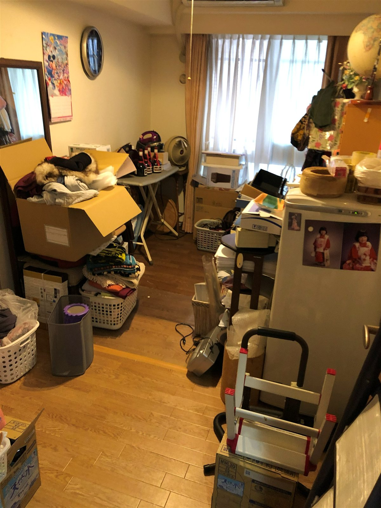

空き家・実家片付け
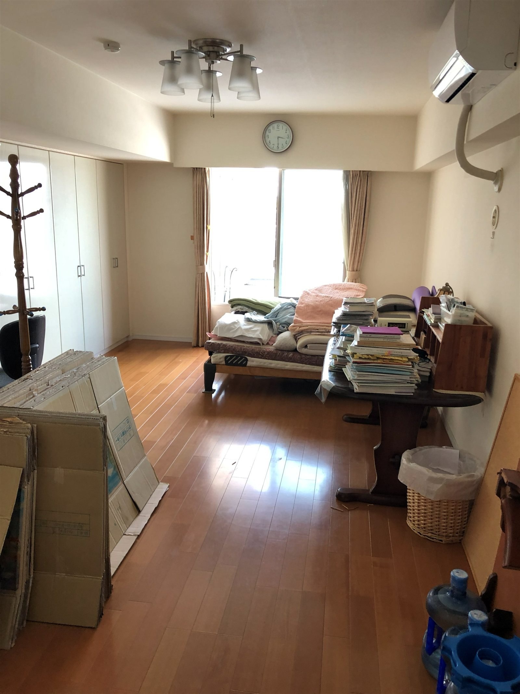

必要品確認
形見として残したいものを、作業前に確認します。
仕分け
リユースできるもの、資源化できるものを分けます。
搬出
種類ごとに分けながら、家財を運び出します。
簡易清掃
搬出後、お部屋の簡易清掃を行います。
お客様の声
ご利用いただいたお客様から
都筑区・実家片付けをご依頼のお客様
母が住んでいた都筑区の実家を整理することになり、何から手をつければいいか分からない状態でした。残すもの、確認が必要なもの、引き取りをお願いするものを一緒に分けてもらえたので、家族だけで進めるよりずっと落ち着いて作業できました。見積もりの時点で作業内容を具体的に説明してもらえたのも安心でした。
施設入居前の家財整理をご依頼のお客様
施設入居に合わせて、部屋の家財整理をお願いしました。大きな家具や家電だけでなく、衣類や書類、小物まで確認しながら仕分けてもらえたので助かりました。リユースできるものや資源として活かせるものも見てもらえて、ただ片付けて終わりではないところが良かったです。
個人が特定されないよう、一部内容を調整して掲載しています。
料金の目安
間取り別の料金目安
料金は、部屋の広さ、物量、搬出条件、仕分け量、買取・リユースできる品の有無で変わります。
リユースや資源化によって、整理する量を減らせる場合があります。
現地確認後に作業内容と料金をご説明し、ご了承いただいてから作業を進めます。
ご依頼の流れ
お問い合わせから作業完了まで
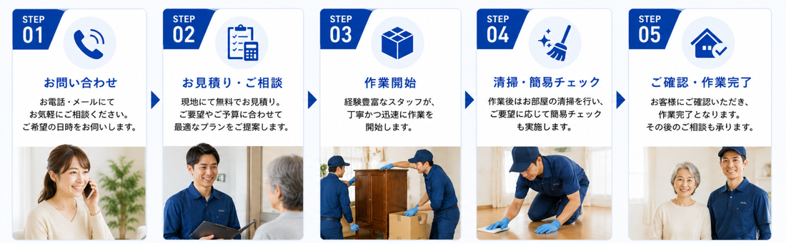
- STEP 1
電話・LINE・フォームでご相談
お気軽にご連絡ください。写真を送っていただくこともできます。
- STEP 2
状況の確認
お電話や写真で、お部屋の広さや荷物量を確認します。
- STEP 3
現地確認・お見積もり
現地を確認したうえで、料金をお伝えします。
- STEP 4
必要なものと手放すものを分ける
形見として残したいものを、先に確認しながら進めます。
- STEP 5
搬出・回収
仕分けながら、家財を運び出します。
- STEP 6
自社作業場で仕分け・リユース・資源化
約500坪の作業場で、リユース品や資源化できるものを分けます。
選ばれる理由
都筑区のお客様に選んでいただいている理由
株式会社アートさくら 神奈川本社｜横浜市都筑区池辺町1183-4｜古物商許可証番号 451930009599号
都筑区の神奈川本社から対応
池辺町の本社から、都筑区内のマンション・戸建て・空き家整理に伺います。
約500坪の自社作業場
回収した品物を自社作業場に運び入れ、時間をかけて仕分け・分別できるため、大量の家財整理にも対応しやすい体制です。
自社一貫対応
回収から自社作業場での仕分け・分別、リユースできるもの・資源化できるものの確認まで、自社で行います。
古物商許可あり
許可証番号451930009599号を取得しています。
買取・リユース相談
買取、リユース、リサイクル、資源化まで、まとめてご相談いただけます。
大量整理にも対応
戸建て・空き家・施設入居前後の片付けも対応しやすい体制です。
よくあるご不安
こんなご不安にお答えします
対応エリア
横浜市都筑区全域に対応しています
下記は対応エリアの一例です。記載のないエリアも対応できる場合がありますので、まずはご相談ください。
神奈川本社（横浜市都筑区池辺町）を拠点に、都筑区内のマンション・戸建て・空き家整理にあわせて対応しています。
- センター北
- センター南
- 仲町台
- 北山田
- 東山田
- 都筑ふれあいの丘
- 川和町
- 中川
- 荏田南
- 茅ケ崎中央
- 池辺町
- 折本町
- 大熊町
- 牛久保周辺
よくある質問
ご依頼前によくいただくご質問
都筑区のマンションでも対応できますか。
対応しています。エレベーターの有無や搬出経路を確認したうえで進めます。
立ち会いは必要ですか。
基本的にはお願いしていますが、難しい場合は写真での共有や鍵をお預かりしての対応もご相談いただけます。
料金は何で変わりますか。
部屋の広さ、物量、搬出条件、仕分けにかかる時間、買取・リユースできる品の有無によって変わります。
買取やリユースの相談はできますか。
状態のよい家具・家電・貴金属などは、仕分けの際にあわせてご相談いただけます。
大量の家財がある戸建てでも相談できますか。
相談いただけます。約500坪の自社作業場があるため、大量の家財でも仕分けを進められます。
作業後の簡易清掃はできますか。
対応しています。搬出後にお部屋の簡易清掃を行います。
LINEで写真を送って相談できますか。
可能です。お部屋の写真を送っていただくと、概算のお見積もりがしやすくなります。
見積もり後に断っても大丈夫ですか。
問題ございません。お見積もり内容をご確認いただき、ご納得いただけた場合のみ作業に進みますので、ご遠慮なくお断りください。
遠方に住んでいて立ち会いが難しい場合も相談できますか。
ご相談いただけます。ご事情に応じて、お電話や写真でのやり取りを中心に進め方をご案内することもできます。
買取できるものがあるか見てもらえますか。
可能です。仕分けの際に状態のよい家具・家電・貴金属などがあれば、あわせて確認し、買取できるかどうかをご案内します。
施設入居前後の片付けもできますか。
対応しています。施設入居前のお部屋の整理だけでなく、入居後に残ったお部屋の家財整理についてもご相談いただけます。
急ぎの場合は相談できますか。
お急ぎのご事情がある場合は、まずはお電話やLINEでご相談ください。日程によっては、通常より早めにご案内できる場合があります。
都筑区の遺品整理・実家片付けは、まず状況を聞かせてください。
部屋の広さ、物量、搬出条件、残したいものを確認して、無理のない進め方をご案内します。
部屋全体・押し入れ・大型家具などの写真を送ると、状況を確認しながらご案内できます。